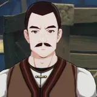

Chương II · Màn IV
Khúc An Hồn Nơi Đáy Vực
Nhiệm vụ Ma Thần — Liyue
Nhân vật xuất hiện
 Nhân vật chính · Nhà Lữ HànhLumineNhà Lữ Hành đến từ thế giới khác. Bị vị thần lạ mặt phong ấn và cướp mất người anh song sinh, cô bắt đầu hành trình đi tìm Bảy Vị Thần của Teyvat.
Nhân vật chính · Nhà Lữ HànhLumineNhà Lữ Hành đến từ thế giới khác. Bị vị thần lạ mặt phong ấn và cướp mất người anh song sinh, cô bắt đầu hành trình đi tìm Bảy Vị Thần của Teyvat. Bạn đồng hànhPaimonĐược Lumine cứu khỏi chết đuối hai tháng trước, Paimon tự nhận làm người dẫn đường cho cô. Hay ăn, hay nói, và rất ghét bị gọi là “thực phẩm dự trữ”.
Bạn đồng hànhPaimonĐược Lumine cứu khỏi chết đuối hai tháng trước, Paimon tự nhận làm người dẫn đường cho cô. Hay ăn, hay nói, và rất ghét bị gọi là “thực phẩm dự trữ”.- “Kiếm Sĩ Hoàng Hôn” · cựu đội trưởng đội cận vệ hoàng gia Khaenri'ahDainsleifĐuổi theo một Sứ Đồ Vực Sâu qua cổng dịch chuyển và lạc đến Vực Đá Sâu, gặp lại Lumine. Cùng cô điều tra tòa thành đảo ngược, nơi có khả năng làm suy yếu lời nguyền.
- Kỵ Sĩ Hắc XàHalfdanTinh anh trẻ tuổi trong đội cận vệ hoàng gia Khaenri'ah năm xưa. Vẫn giữ được ý chí sau năm trăm năm, dẫn các Kỵ Sĩ Hắc Xà bảo vệ những Hilichurl đang chờ kết cục của mình.
 Anh trai song sinh của Lumine · “Hoàng tử điện hạ”AetherHiện ra trong ký ức mà Lumine thấy khi chạm vào hoa Inteyvat, đồng ý để Sứ Đồ Vực Sâu dùng “thiết bị” thanh tẩy lời nguyền.
Anh trai song sinh của Lumine · “Hoàng tử điện hạ”AetherHiện ra trong ký ức mà Lumine thấy khi chạm vào hoa Inteyvat, đồng ý để Sứ Đồ Vực Sâu dùng “thiết bị” thanh tẩy lời nguyền.- KHiệp Hội Nhà Mạo HiểmKatheryneGiới thiệu cho Lumine ủy thác của người thợ mỏ Yuehui ở Vực Đá Sâu. Sáng hôm đó cô rút quẻ được lời dự báo về một “cuộc hội ngộ bất ngờ”.

Thợ mỏ ở Vực Đá SâuYuehuiMột trong những thợ mỏ đầu tiên được cấp giấy phép khai thác Vực Đá Sâu. Ủy thác Lumine điều tra những Hilichurl chạy vào Vực Đá Sâu rồi không quay trở ra. Giáo Đoàn Vực SâuSứ Đồ Vực SâuKẻ từng bỏ chạy khỏi Dainsleif qua cổng dịch chuyển. Chặn đường nhóm Lumine để bảo vệ “ý chí của điện hạ” và bị đánh bại.
Giáo Đoàn Vực SâuSứ Đồ Vực SâuKẻ từng bỏ chạy khỏi Dainsleif qua cổng dịch chuyển. Chặn đường nhóm Lumine để bảo vệ “ý chí của điện hạ” và bị đánh bại.- LGiáo Đoàn Vực SâuLinh Mục Vực SâuCanh giữ thiết bị khuếch đại ở căn phòng trung tâm của di tích, bị Lumine đánh bại.
- KCựu cận vệ hoàng gia Khaenri'ahKỵ Sĩ Hắc XàNhững kỵ sĩ mang lời nguyền canh giữ di tích và những Hilichurl già yếu. Theo Dainsleif, họ đang hô “mau chạy đi” bằng tiếng Khaenri'ah cổ.
Các phần
- Phần 1Hội Ngộ Nơi Đáy Vực
- Phần 2Linh Cữu Người Được Bảo Vệ
- Phần 3Ký Ức Của Inteyvat
- Phần 4Vinh Quang Của Kỵ Sĩ Hắc Xà
Toàn bộ lời thoại được lấy từ bản tiếng Việt chính thức của trò chơi. Ở những đoạn người chơi được chọn câu trả lời, truyện chọn một lựa chọn duy nhất.